Всероссийский
студенческий выпускной
27 июня 2020
Выпускной начинается через
«Студенческий онлайн концерт»
Праздник, который соберет всех
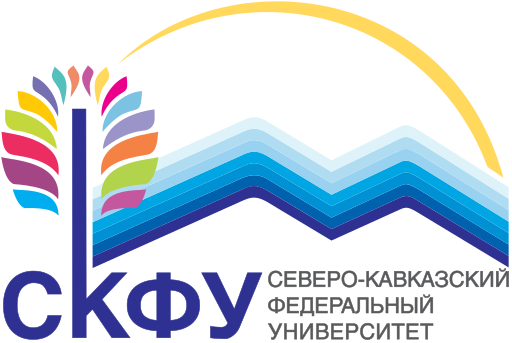
Не пропусти грандиозное событие российского интернета! Всероссийский студенческий выпускной из всех университетов страны!
Все вместе - от студентов до глав корпораций! В эфире вас будут ждать поздравления от Министра науки и высшего образования, генерального директора АНО «Россия – страна возможностей» и Союза ректоров, а также лучшие творческие номера от выпускников. В программе выступления молодых и известных музыкантов и артистов, любимые песни, конкурсы и подарки.
Станьте зрителем первого в истории Всероссийского онлайн-выпускного для студентов!
Лучшие выпускники Северо-Кавказского федерального университета

Наука
-
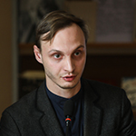МельниковСергей Владимирович
-
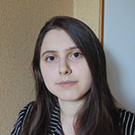БабаянСона Вардановна
-
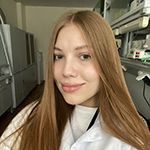ЩербаковаВиктория Юрьевна
Образование
-
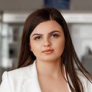БаисоваСайда Руслановна
-
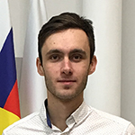РечицкийАлексей Сергеевич
-
ЩикуновНиколай Николаевич
Общественная деятельность
-
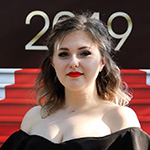СтупаковаЭлеонора Кирилловна
-
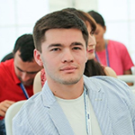ШоровЕрстем Заурбиевич
-
ЛузянинГеоргий Геннадьевич
Преподавание
-
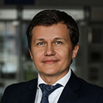БрацихинАндрей Александрович
-
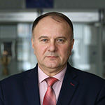ПетренкоВячеслав Иванович
-
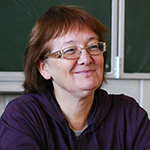ЛепилкинаОльга Ивановна
-
АксеновНиколай Александрович